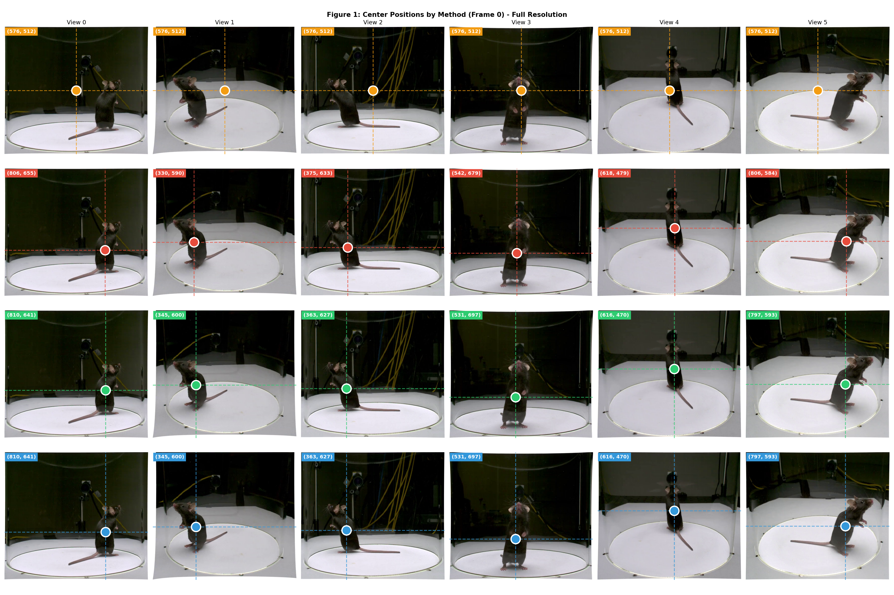
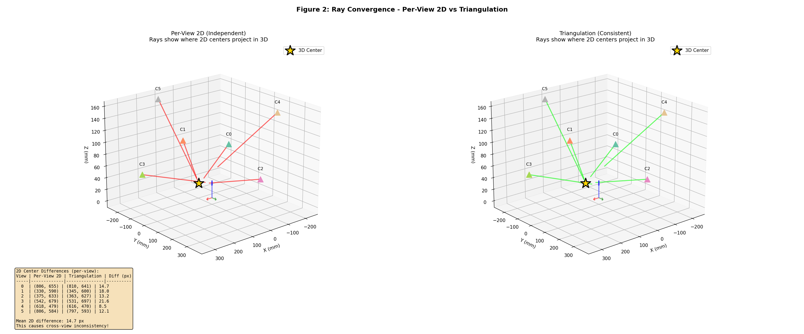
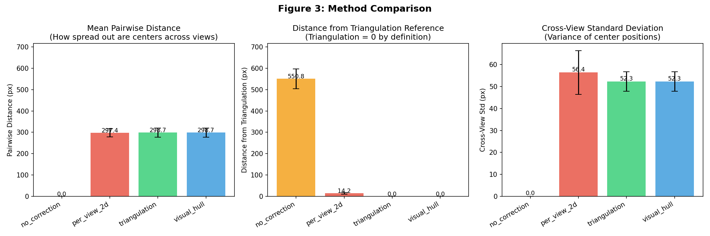
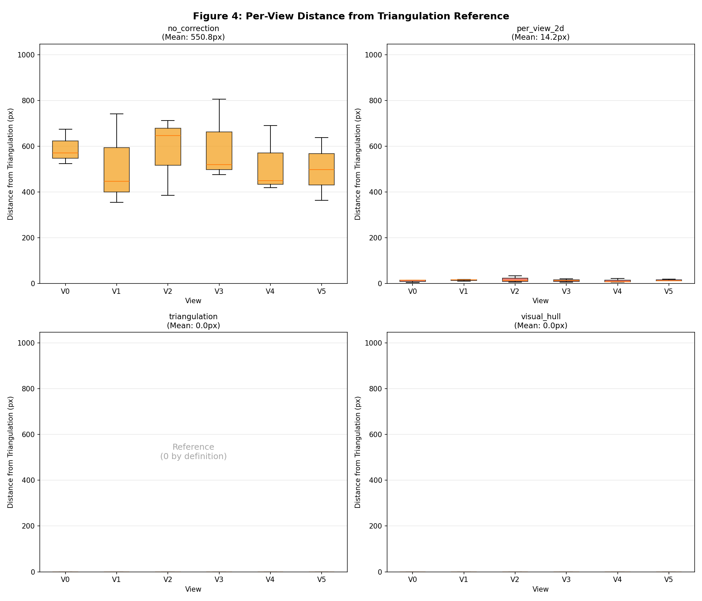
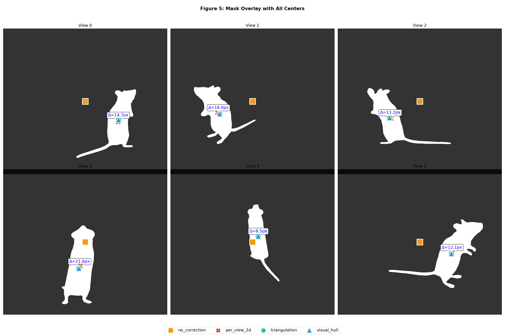

Generated: 2026-01-17 13:34

각 뷰에서 4가지 center estimation 방법의 2D 중심점 비교. Triangulation (녹색)은 3D에서 back-project하므로 기하학적으로 일관성 있음.

Per-View 2D (좌): 독립적인 2D centroid → rays 수렴 불완전. Triangulation (우): 단일 3D point에서 back-project → rays 완벽 수렴.
| View | Original fx | Original fy | Original cx | Original cy |
|---|---|---|---|---|
| 0 | 1632.3 | 1639.3 | 601.3 | 491.2 |
| 1 | 1556.8 | 1580.5 | 622.0 | 417.5 |
| 2 | 1630.3 | 1633.0 | 611.4 | 477.6 |
| 3 | 1606.2 | 1617.6 | 582.6 | 551.9 |
| 4 | 1618.3 | 1628.9 | 641.5 | 453.2 |
| 5 | 1636.9 | 1642.5 | 613.3 | 524.3 |
| Dataset | fx | fy | cx | cy | Description |
|---|---|---|---|---|---|
| D0/v13 (Bug) | orig | orig | 256 | 256 | PP forced but no shift → Ray error! |
| D1 (PP-centered) | orig | orig | 256 | 256 | Shift image → PP correct |
| D2/D3 (Correct PP) | orig | orig | actual | actual | Real PP, model handles it |
| FaceLift Default | 500 | 500 | 256 | 256 | Pretrained assumption |

각 방법론의 cross-view consistency 및 reprojection error 비교.

각 뷰별 2D center 차이 분석. Triangulation이 기준(0px)이므로 deviation은 per_view_2d와 triangulation 간 차이를 나타냄.

각 뷰에서 마스크와 center estimation 결과 오버레이.
| Method | Cross-View Std | Dist from Triangulation | Ray Error |
|---|---|---|---|
| no_correction | 0.0 px | ~534 px | High |
| per_view_2d | ~60 px | 14.7 px (mean) | Medium |
| triangulation | ~58 px | 0 px (reference) | Low |
| visual_hull | ~58 px | ~0 px | Low |
Report generated by validate_center_research_v4.py